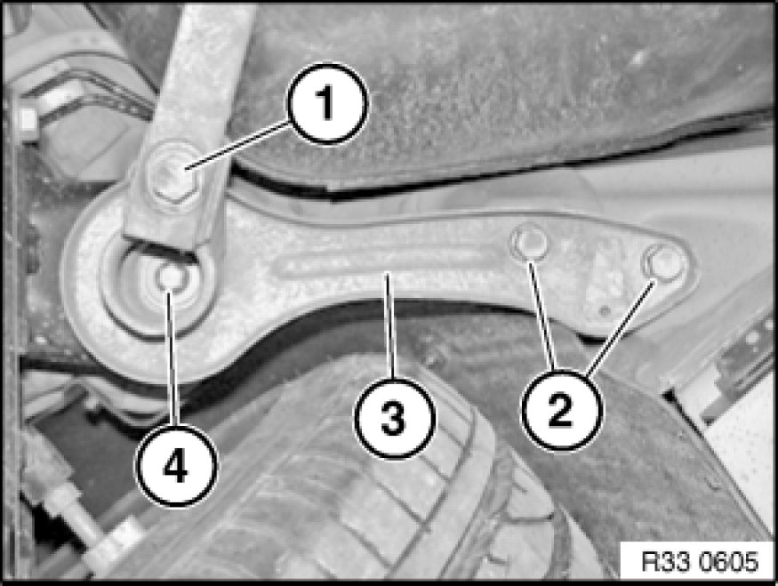

Replacing Left or Right Rear Axle Carrier Compression Strut
33 33 001 - Replacing left or right rear axle carrier compression strut

Important!
Observe safety instructions 00 .. ... Lifting Vehicle With A Lifting Platform for raising the vehicle
Driving without torque reactor struts and tension strut is not permitted!
Risk of damage!
The rear axle carrier must be supported at the front if both compression struts have to be replaced!

Necessary preliminary tasks:
- Remove rear lip Removing and Installing/Replacing Rear Left or Right Ram-Air Lip

Release screw (1).
Tightening torque 33 32 12AZ 33 32 Control Arms and Struts (Rear).
Release screws (2).
Installation Note:
Replace screws.
Tightening torque 33 33 2AZ 33 33 Rear Axle Suspension.
Release screw (4) and remove compression strut (3).
Installation Note:
Check threads for damage; if necessary, repair with Helicoil thread inserts 33 00 ... Notes on Repairing Threads.
Tightening torque 33 33 1AZ 33 33 Rear Axle Suspension.